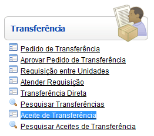
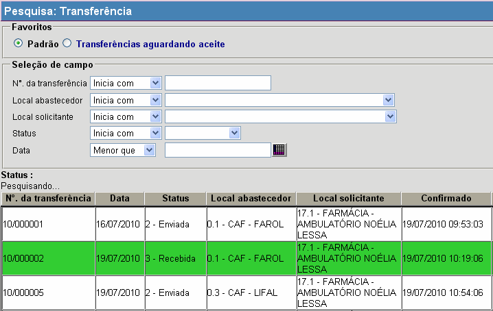
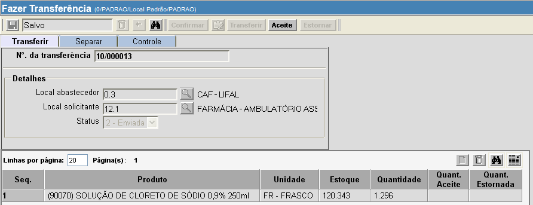
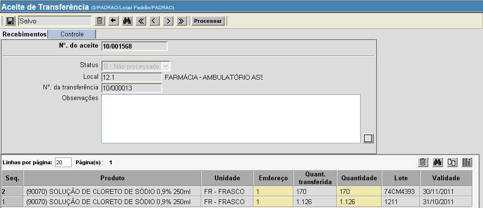

Aceite de Transferência [ Voltar ]Utilize esta tela para localizar e realizar aceites de transferências. O formulário "Aceite de transferência" encontra-se dentro do menu "Transferência". 
Ao clicar no formulário, o sistema exibirá a seguinte tela: 
Para realizar o aceite, siga os passos abaixo: 1º Passo: selecione com um clique a transferência que deseja receber. Para localizar a transferência desejada, configure as opções de filtros. Um ou mais filtros poderão ser utilizados concomitantemente. Os filtros disponíveis são:
Exemplos: para localizar
transferências de uma determinada data, utilize a opção "Igual a" e informe
a data desejada; ou, para pesquisar transferências enviadas após uma
data específica, selecione a opção "Maior
que" e informe a data de referência.
Ao selecionar uma transferência, a tela "Fazer transferência" será aberta para conferência. 
2º Passo: clique no botão para seguir para a tela "Aceite de transferência". 
4° Passo: clique no botão Após processado o aceite, clique no botão  para visualizar a tela de impressão do relatório de aceite.
para visualizar a tela de impressão do relatório de aceite.
|
 para concluir o
aceite.
para concluir o
aceite.